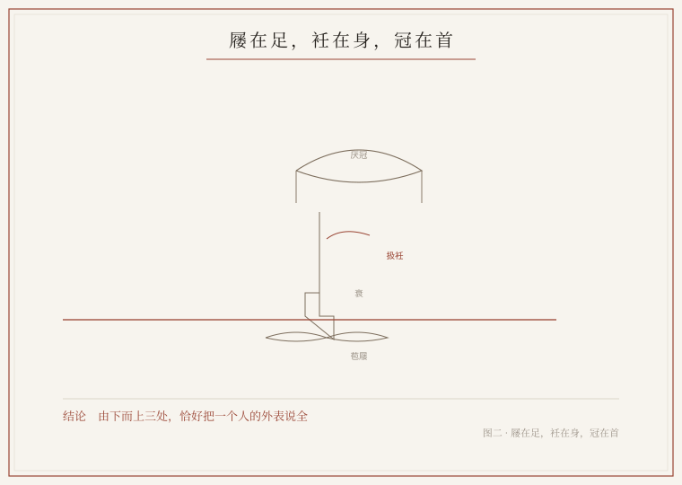

曲礼下 · 二·十九 · 第 142 课
草制的丧屦、亲死之初扱起上衽的孝子之状、丧冠厌伏之形，三者皆凶服，不得入公门。
说什么事：苞屦、扱衽、厌冠，不入公门。
落在哪一层：仪，兼及礼意。与前节同一道门限，此节专取「凶服」。
为何编在此位：上节五物以「嫌」分，此节三物同属凶服，故合为一条——礼的归类方式在此显形。
【经】苞屨、扱衽、厭冠，不入公門。
【注】此皆凶服也。苞，藨也，齊衰藨蒯之菲也。《問喪》曰：「親始死，扱上衽。」厭猶伏也，喪冠厭伏。苞或為菲。
【疏】苞屦，谓藨蒯之草为齐衰丧屦。扱衽者，亲始死，孝子徒跣扱上衽也。厌冠者，丧冠也，厌帖无者强，为五服丧所著也。……此并五服之内，丧服差次，不合入，不得著入公门也。
苞屦 注「苞，藨也，齐衰藨蒯之菲也」。以草为屦，齐衰之丧屦。
菲 注「苞或为菲」。菲者，草屦之薄者。
扱衽 扱，插也。注引《问丧》「亲始死，扱上衽」：孝子徒跣，扱裳前幅于带。
厌冠 注「厌犹伏也，丧冠厌伏」。冠形低伏，不挺。
五服差次 疏语。五服之内各有差等，皆不合著入。
不入公门 所禁者是「著入」，非禁人。
草制的丧屦、扱起前襟的孝子之服、低伏的丧冠，都不穿进公门。
三物皆凶服的一部分，且都是脚下、身上、头上的最外一层。礼禁的是「穿在身上走进来」，不是禁其服。故曰「不得著入公门」。
第一层 凶服有差 疏「五服之内，丧服差次」。最重者不全禁，最轻者亦不在许；差别在于见君之事的大小。
第二层 三处的分工 屦在足，衽在身，冠在首。一节之内，由下而上，恰好把一个人的外表说全。
第三层 扱衽最急 扱衽是「亲始死」之状，丧之最初一刻。这一刻的人，本不该出现在公门。
第四层 与上节同一门限 五物以物论，三物以服论。物的嫌疑可解，服的嫌疑不可解——服在身上，人即其服。
与今日何干 穿着丧服去开会，今日虽无明禁，仍有人心中不安。这条不安，就是礼残留的效力。
| 左 | 右 |
|---|---|
| 苞屦 | 藨蒯草屦，齐衰之丧屦 |
| 扱衽 | 亲始死，扱上衽于带 |
| 厌冠 | 丧冠厌伏，不挺 |
| 此皆凶服 | 五服之内，各有差次 |
| 不入公门 | 不得著入，非禁其人 |
| 一节之内 | 屦在足，衽在身，冠在首 |
画一件悬空的丧服（只画轮廓，不着人）：下摆前方被扱起一角、塞入腰间，冠形低伏、冠缨松垂，服下一双草编的屦摆在门槛之外。整体自上而下排列，冠在上、衣在中、屦在下，三者以极淡的虚线相连成一件。一道门限横贯下部，屦止于线外。不写文字。赭色只用在扱起的那一角衣襟上。
